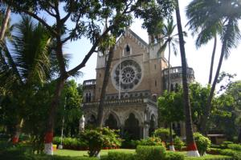
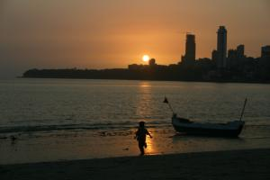

Le 21 décembre 2004,
 Mumbai, Bombay pour les nostalgiques, capitale economique du pays, est aussi surnommee Bollywood en raison du nombre impressionnant de films en hindi qui sortent de ses studios chaque annee. Encore fatigue par ma recente maladie et un peu choque par le rythne endiable de la ville en conparaison avec le calme d’Udaipur, je vis assez mal ma premiere journee et la pauvre Eve-Laure en patit, d’ailleurs !
Heureusement, mes inpressions et emotions sont largement plus positives le deuxieme jour. A mon sens, Mumbai est une ville largement plus agreable et plus belle que Delhi, meme si elle compte 15 millions d’habitants contre 10 pour la capitale. En premier lieu, surement parce qu’elle situee sur une ile au bord de la mer d’Oman, Mumbai est largement moins pollueee, en tous cas nos poumons n’ont pas eu a en souffir ! Ensuite, ses batiments datant de l’epoque victorienne (eglise, universite, poste, gare, batiments administratifs) sont maginfiques et ses larges avenues lui donnent un style et une ambiance coloniales tout a fait charmants.  De plus, la proximite de la mer permet d’echapper a souhait au bruit et au monde en contemplant un coucher de soleil depuis la jetee ou une de ses plages. Enfin, c’est la seule ville ou nous n’avons pas ete sollicites a tout bout de champ car les gens semblent presses et plus interesses par leur business que par deux europeens habilles en touristes. A ce sujet, l’attitude est differente de celle des parisiens : au lieu de regarder droit devant eux comme-ci personne d’autre n’existait, les habitants de Mumbai regardent leurs pieds, ce qui provoque parfois des situations etranges !
Sous les conseils d’un couple de voyageurs rencontres a Jodhpur, nous decidons d’aller au cinema voir un film en hindi. On les appelle aussi films massala a cause du melange (c’est la traduction de massala) entre comedie musicale, action, et romantisme. Ces films sont en general tres longs (notre seance dure 3h30 !) mais sont heureusement coupes par un entracte.
La salle est immense. Comme au theatre, les sieges sont numerotes et les tarifs differents selon le placement. La seance commence par l’hymne national, pendant lequel tous les spectateurs se levent et restent droites comme des i en contemplant le drapeau a l’ecran.
Incapables de saisir un mot, a part quelques phrases lances en anglais, Eve-Laure et moi parvenons tout de meme a recomposer le tissu du scenario en discutant pendant le film. De toutes facons, nous ne pouvons pas deranger les autres spectateurs car le son est tres fort ce qui permet a certains de passer tranquillement des coups de fil sur leur telephone mobile sans que personne ne bronche. Le film est tres bien realise, les decors et paysages sont magnifiques, les actrices encore plus. Cependant, 3 heures en hindi, c’est long ! Mais ca n’a pas l’air de deranger Eve-Laure ...
La ville nous offre plusieurs autres activites : traverser les differents bazars, regarder les jeunes s’entrainer au cricket dans d’immenses parcs, deguster une bonne tranche de boeuf apres une mois d’abstinence, visiter la bibliotheque universitaire ... Mais il est temps de se preparer a partir pour Bangkok et refermer le grand livre de l’Inde que nous avons a peine feuillete !
Michaël
{kind=link}
{kind=link}